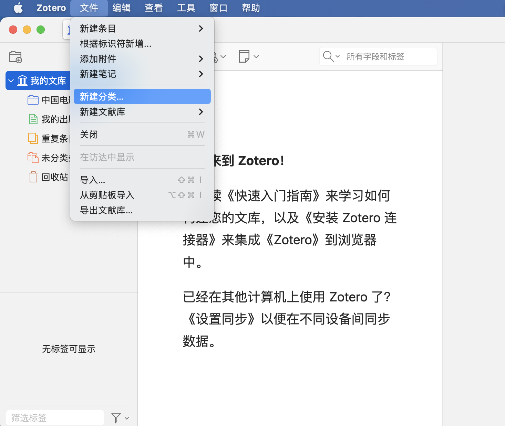
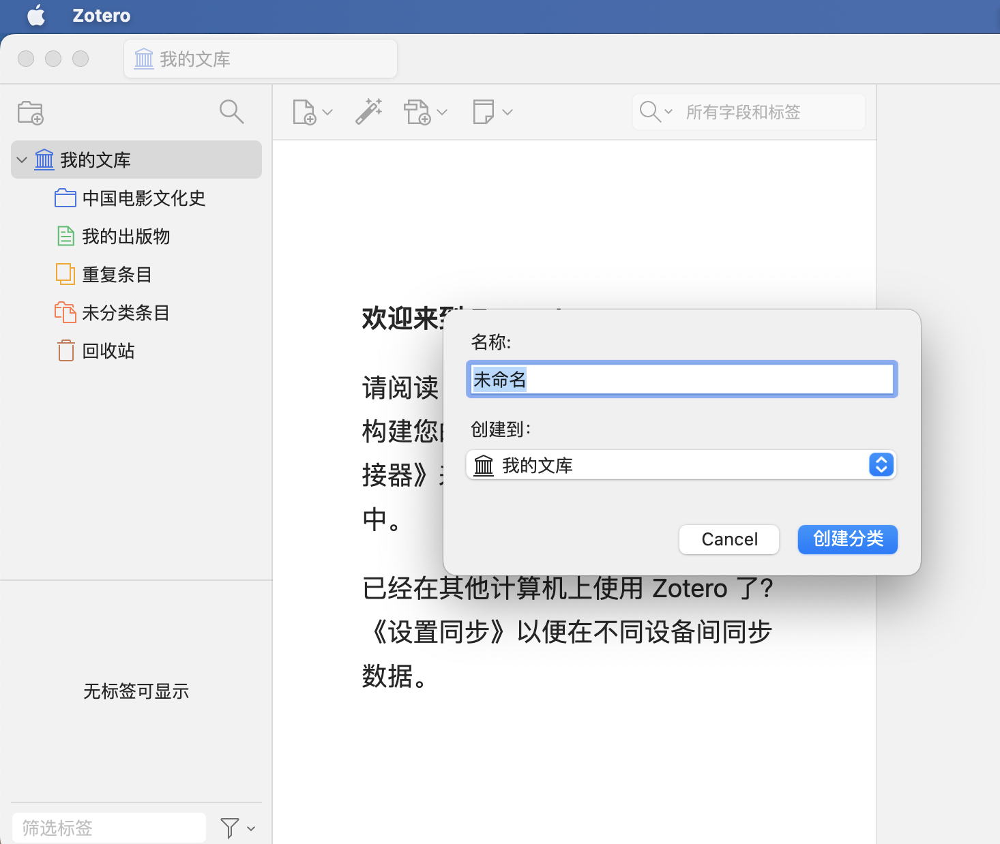
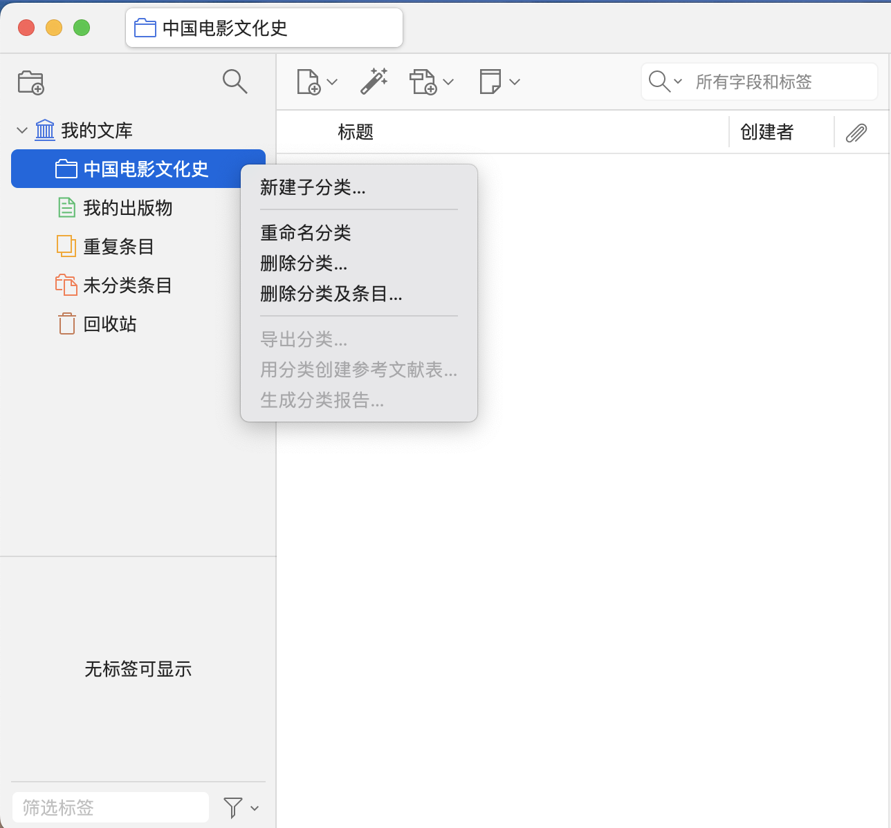
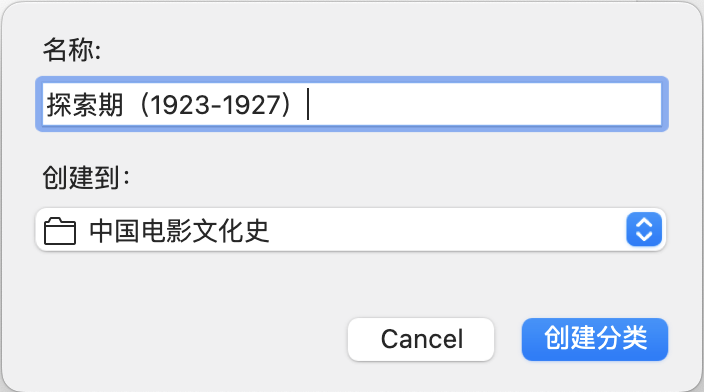
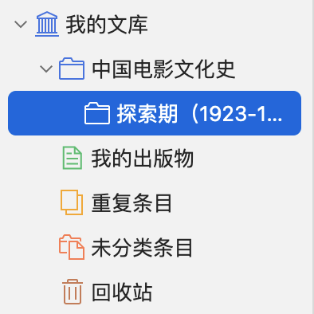
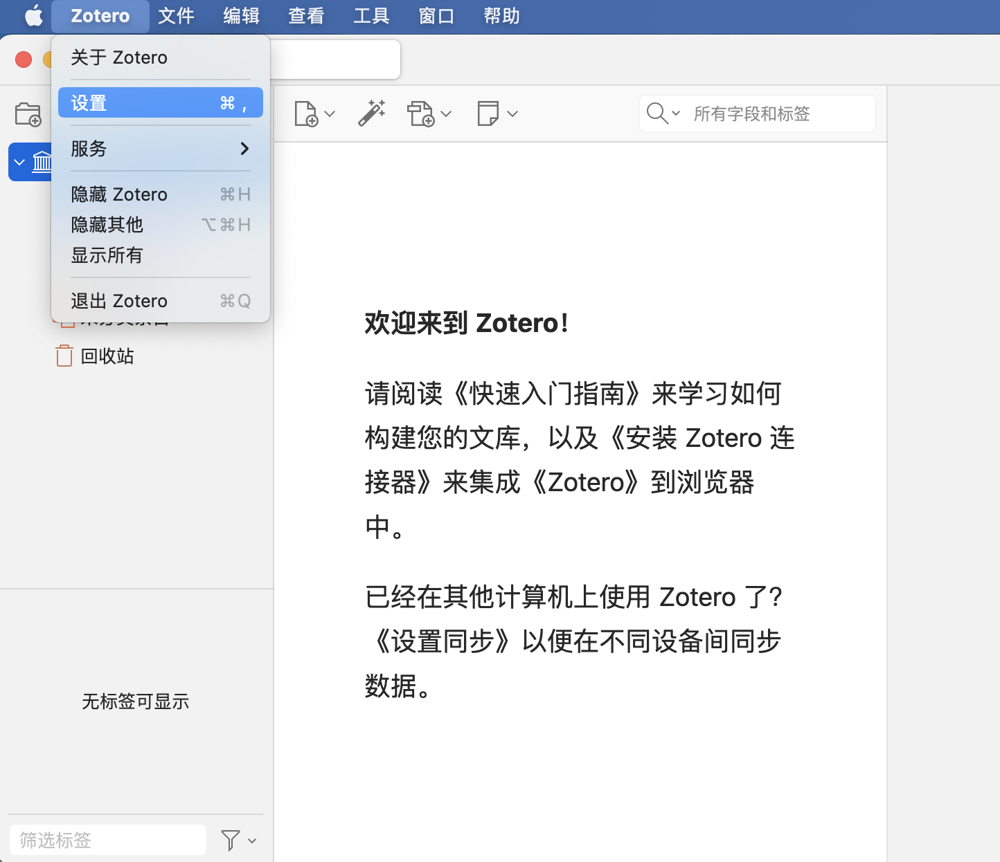
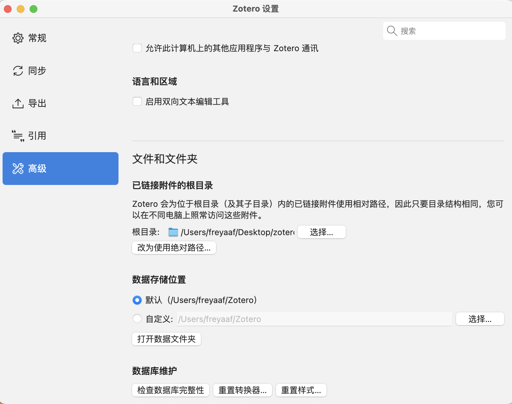

4.1.1 新建 Zotero 文献库并自定义存储位置
-
点击屏幕左上角文件菜单，选择新建分类。

-
在弹出的名称对话框中输入文献库名称，点击创建分类。

-
右键选中文献库，可以新建子分类、重命名文类、删除分类。此处以新建子分类为例。键入子分类名称并点击创建分类。

- 快捷方式：直接点击 Zotero 界面左上角的新建分类图标。
- 选择屏幕左上角Zotero菜单，点击设置。
-
在弹出的设置对话框中，选择高级，点击选择按钮设置自定义存储路径。
